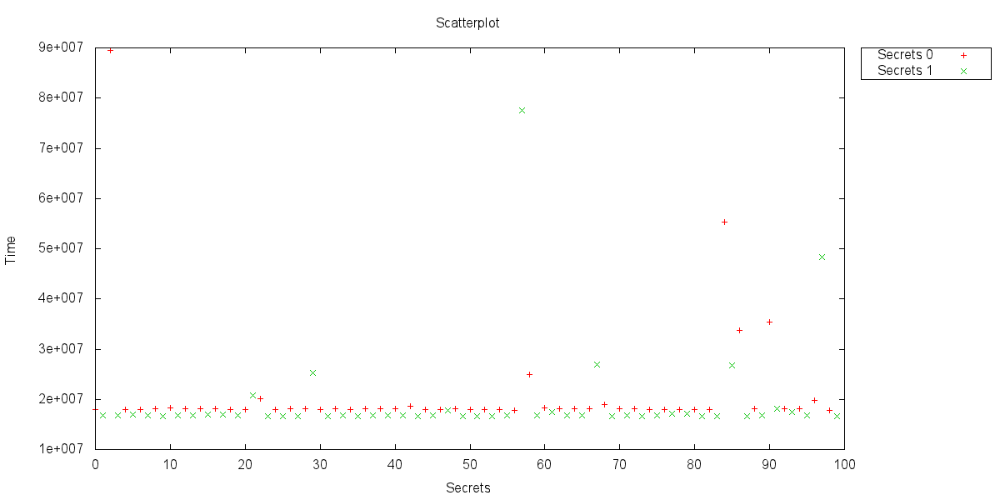
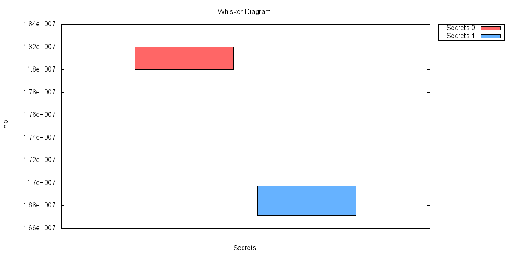
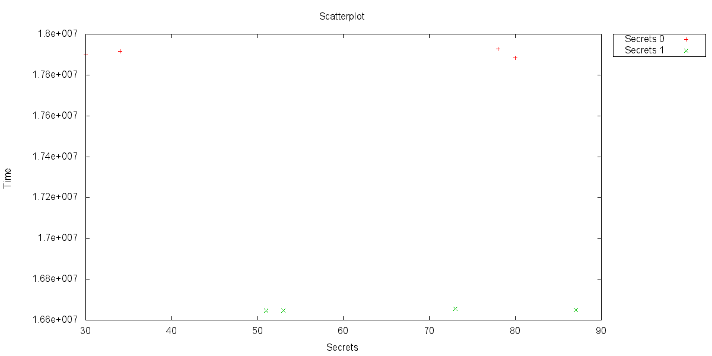
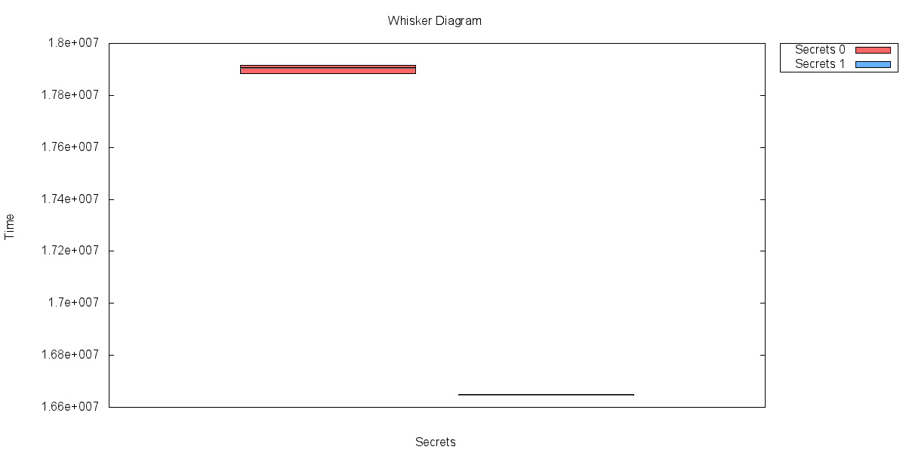
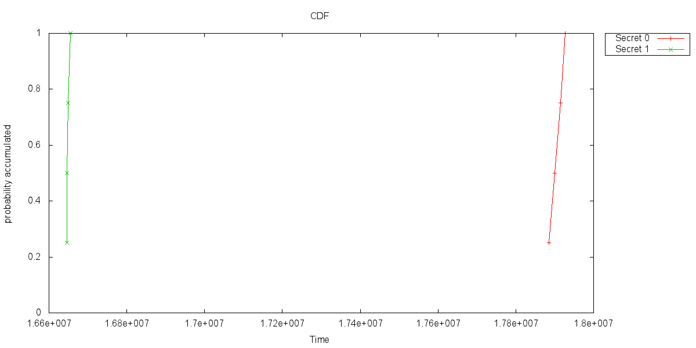
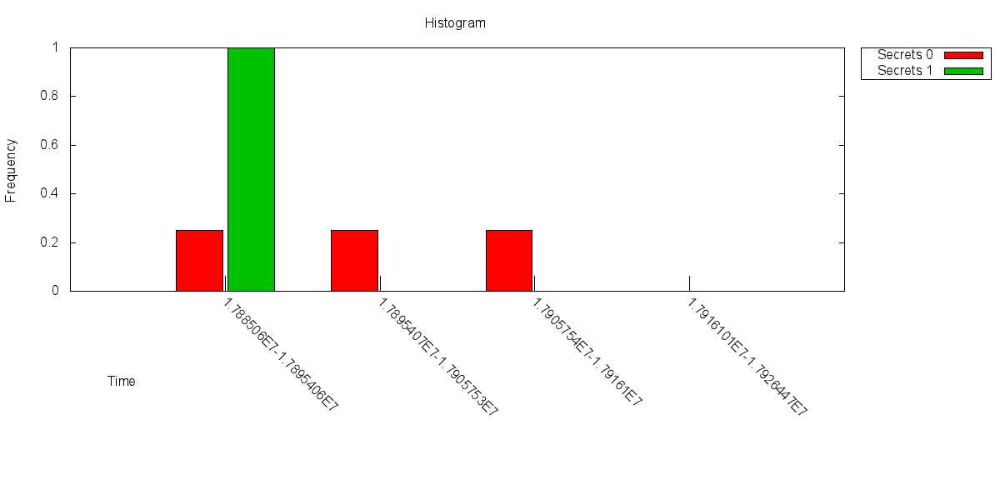

Results unfiltered
plots, sort by secret:
Scatterplot

Whisker Diagram

Cumulative Distribution Function

Histogram

Results filtered
Filtered Scatterplot

Filtered Whisker Diagram

Filtered Cumulative Distribution Function

Filtered Histogram

Summary
| Secret |
Number of measurements |
MIN |
MAX |
Median |
AVG |
| 0 | 50 | 17846417 | 89484768 | 18077933 | 21127064
|
| 1 | 50 | 16616005 | 77582453 | 16765448 | 19339608
|